| L-system |
A D0L (Deterministic Lindenmayer system without interaction) system consists of a finite set 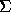 of symbols (the alphabet), a finite set P of productions and a starting string 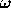 . The productions in P are of the form 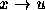 , where 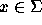 and 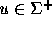 (u is called the right side of the production), 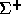 is the set of all strings of symbols from excluding the empty string. Such productions represent the transformation of the symbol x into the string u. For each symbol , P contains exactly one production of the form . Direct derivation from string 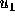 to 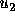 consists of replacing each occurrence of the symbol in by the string on the right side of the production for that symbol. The language of the D0L system consists of all strings which can be derived from the starting string by a sequence of the direct derivations.
Suppose that the alphabet consists of two symbols a and b. So the set of productions includes two productions of the form a 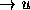 , b 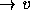 , where u and 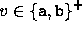 , and the starting string 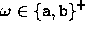 . Can you answer whether there exists a string in the language of the D0L system of the form xzy for a given string z? (x and y are some strings from 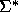 , is the set of all strings of symbols from , including the empty string.). Certainly you can. Write the program which will solve this problem.
The input file of the program consists of several blocks of lines. Each block includes four lines. There are no empty lines between any successive two blocks. The first line of a block contains the right side of the production for the symbol a. The second one contains the right side of the production for the symbol b and the third one contains the starting string and the fourth line the given string z. The right sides of the productions, the given string z and the starting string are at most 15 characters long.
For each block in the input file there is one line in the output file containing YES or NO according to the solution of the given problem.
aa bb ab aaabb a b ab ba
YES NO